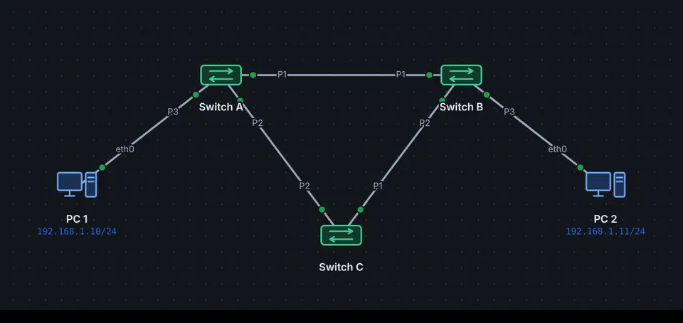
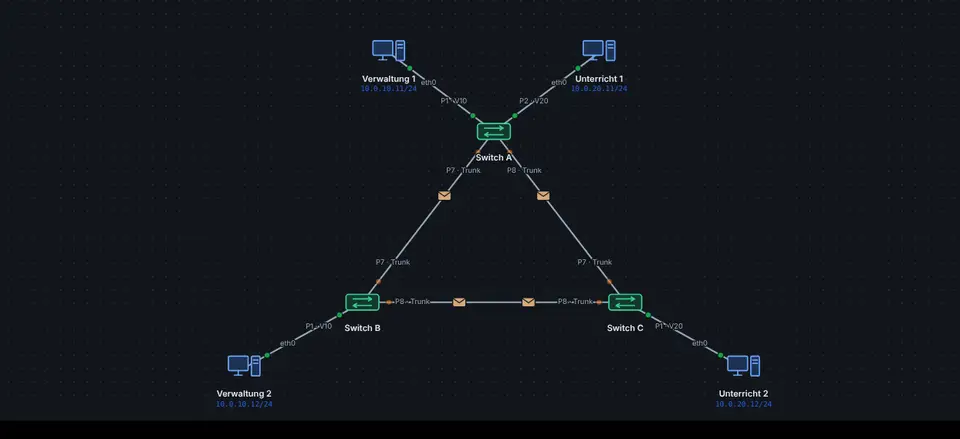

Two cables between switches increase resilience but form a loop. A broadcast is sent round in circles endlessly and multiplies: a broadcast storm. After seconds the network is full and the MAC tables flap back and forth.

Slow motion Broadcast storm without spanning tree: frames circle endlessly
The solution: a tree
The Spanning Tree Protocol turns the meshed network into a tree without loops:
The switches exchange BPDUs and elect a root bridge: the switch with the smallest bridge ID (priority, then MAC address).
Every other switch determines its root port: the path with the lowest cost to the root.
Every link has one designated port; all other ports are blocked.
If a cable fails, the switches recompute and a blocked port takes over.
Role
State
Root port
forwards (towards the root)
Designated port
forwards (away from the root)
Alternate (blocked)
does not forward, only listens to BPDUs
With spanning-tree priority 4096 you make a particular switch (usually in the core) the root.
The BPDU in the frame
BPDUs do not travel in Ethernet II but in an IEEE 802.3 frame with length and LLC header (DSAP and SSAP 0x42) to the multicast address 01:80:c2:00:00:00.
Left to right, in the order the bytes are sent. Grey dashed: never part of a capture (layer 1 or line framing). Point at a field for an explanation.
Field
Length
Example value
Meaning
Preamble (layer 1)
7 bytes
10101010 × 7
Seven bytes 10101010: the receiver synchronises its clock. Part of the physical layer.
SFD (layer 1)
1 bytes
10101011
Start frame delimiter 10101011: the frame starts now.
Destination MAC
6 bytes
01:80:c2:00:00:00
To whom? FF:FF:FF:FF:FF:FF is broadcast, a first byte with the lowest bit set is multicast.
Source MAC
6 bytes
02:00:00:00:01:06
From whom? The MAC address of the sending interface; the switch learns it.
Length
2 bytes
38
Length of the payload in bytes (at most 1500). This tells the receiver it is an IEEE 802.3 frame with LLC instead of Ethernet II.
DSAP
1 bytes
0x42
Destination service access point (IEEE 802.2 LLC): for whom at the other end. 0x42 = spanning tree, 0xAA = SNAP follows.
SSAP
1 bytes
0x42
Source service access point: from which service, usually the same as DSAP.
Control
1 bytes
0x03
LLC control, 0x03 = unnumbered information (without acknowledgement).
OUI (optional)
3 bytes
Only with SNAP (DSAP 0xAA): organisation identifier, 00-00-00 for EtherType values (RFC 1042).
Type (SNAP) (optional)
2 bytes
Only with SNAP: the EtherType of the payload, e.g. 0x0800 for IPv4. This is how Wi-Fi and other LLC networks carry IP.
Payload
38–1497 bytes
43 Byte
The payload, e.g. a spanning tree BPDU. Shorter frames are padded to 64 bytes.
FCS
4 bytes
0x182ad55e
Frame check sequence: CRC-32 over the whole frame from the destination MAC. If it does not match, the receiver drops the frame.
Gap (IFG) (layer 1)
12 bytes
At least 12 bytes of silence before the next frame (interframe gap). Part of the physical layer.
Values: Real frame from the demo “VLAN and spanning tree” (no. 1, 64 bytes), exactly as the packet list in leyoNET shows it.
In leyoNET
Without STP the simulation detects the storm, shows a banner with the affected devices and throttles forwarding so the page stays responsive. With STP, show spanning-tree shows root, roles and states; the blocked port is marked on the canvas.
How to do it in leyoNET
The same text as in the app’s help (F1 key).
Spanning tree (STP)
Redundant cables between switches form loops. Without STP, broadcasts circulate forever: a broadcast storm that cripples the network. The simulator then shows a warning and the affected devices.
With STP the switches elect a root bridge and block some ports until a path fails. Enable it on the switch under «Spanning tree».
See an example

Slow motion This is how it looks in the simulation: every dot is a frame on the cable.VLAN and spanning tree
Three switches in a ring, two VLANs over trunks.
STP blocks one port (orange), then the office reaches its second computer over the trunk with an 802.1Q tag.